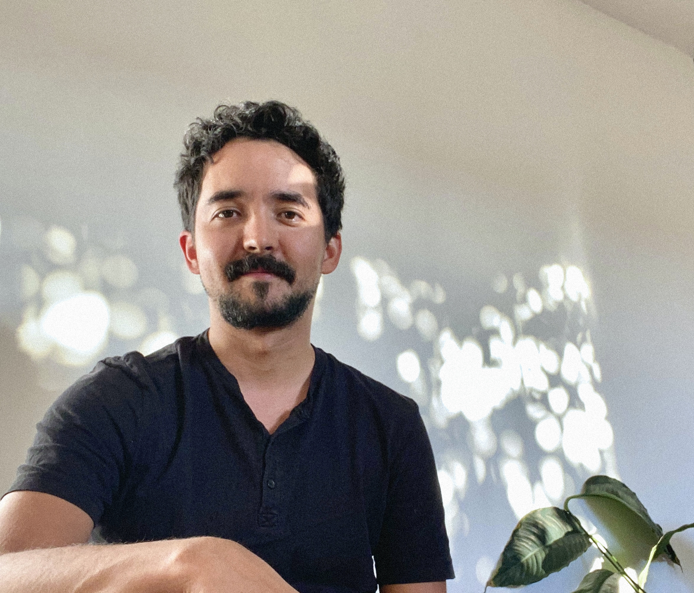

sobre mí:
Hola, soy compositor de música contemporánea hecha con instrumentos acústicos, medios electrónicos digitales y analógicos, y grabaciones de campo. También trabajo como docente, diseñador de sonido e ingeniero de sonido en vivo con sede en Berlín.
En mi música, me interesa la idea del sonido como un fenómeno acústico que, como material artístico, ofrece la característica única de ser fundamentalmente espectral: a pesar de ser emitido por medio de vibraciones de entidades físicas en el espacio, la ausencia de una materialidad corporal del sonido al momento de ser percibido por el escucha contribuye a una experiencia determinada por aquello que no está, física y tangiblemente, presente. El lenguaje musical que intento construir actualmente, entonces, está definido por una narrativa alrededor de eso que no está ahí, una estética de la ausencia y la ilusión de presencia, una fantasmagoría aural.
En mayo de 2023 recibí mi Ph.D. en composición musical de la Universidad de Harvard, donde estudiaba desde 2016 con Chaya Czernowin y Hans Tutschku. También tengo un Bachelor of Music en composición de la Universidad de McGill (Montreal, Canadá) y una maestría en composición y música electrónica de la Hochschule für Musik Carl Maria von Weber (el conservatorio superior de música de Dresde, Alemania), donde estudié con Mark Andre y Franz Martin Olbrisch. Más recientemente trabajé como docente en el Hybrid Music Lab de la HfMDD dentro del marco del proyecto "Nuevos medios y tecnologías digitales en música". Vivo en Berlín y trabajo independientemente como compositor, diseñador de sonido e ingeniero de sonido en vivo. Proyectos actuales incluyen Skin Contact con el coreógrafo Adam Linder y giras con el Gob Squad Arts Collective.
